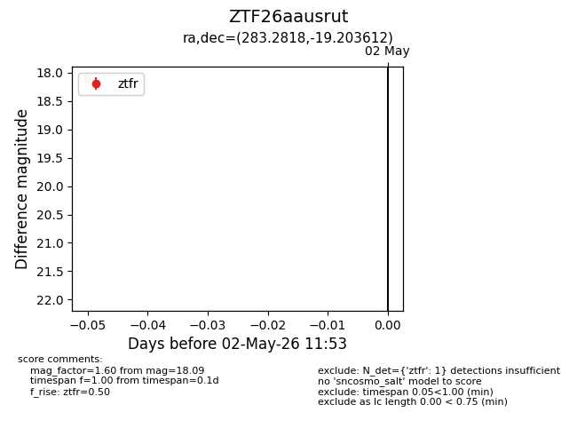
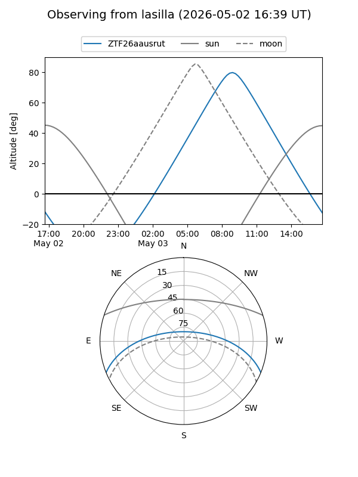
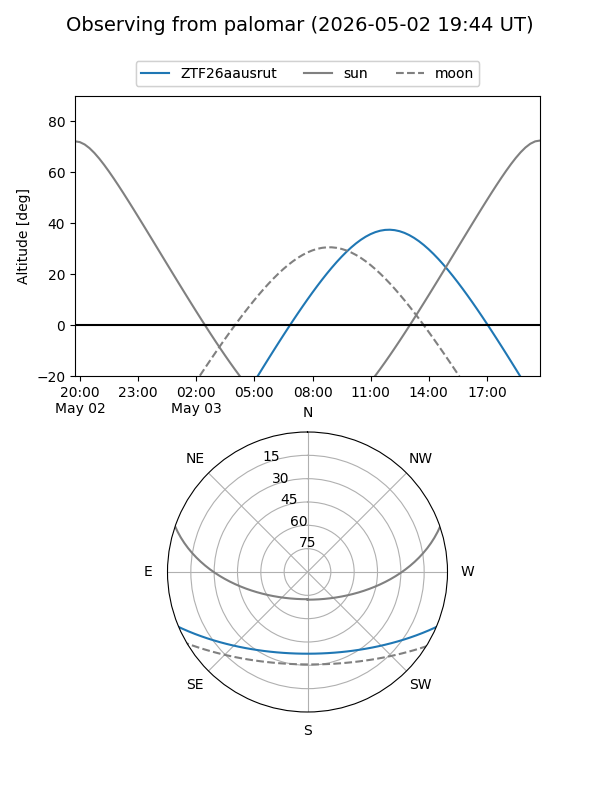

ZTF26aausrut
Target ZTF26aausrut at 2026-05-02 12:04
Aliases and brokers:
FINK: link
Lasair: link
ALeRCE: link
alt names
ZTF26aausrut (ztf,fink_ztf)
Coordinates:
equatorial (ra, dec) = 283.2818,-19.20361
equatorial (HMS+DMS) = 18:53:07.64,-19:12:13.00
galactic (l, b) = (15.8845,-8.98525)
Flags:
Photometry:
last ztfr=18.09
1 ztfr detections
Lightcurve

Visibility


Additional plots